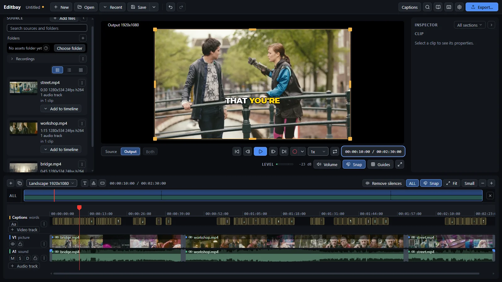
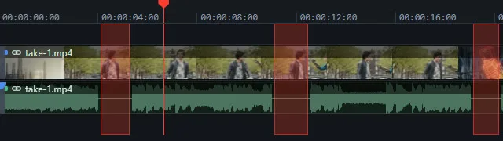
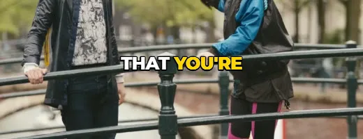
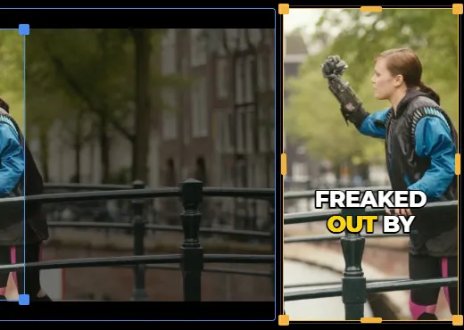
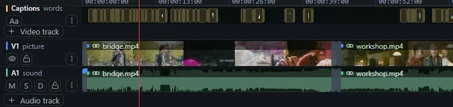
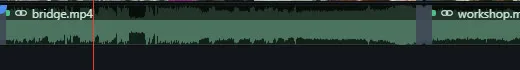
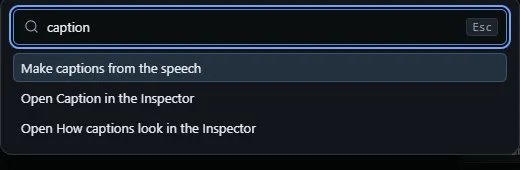
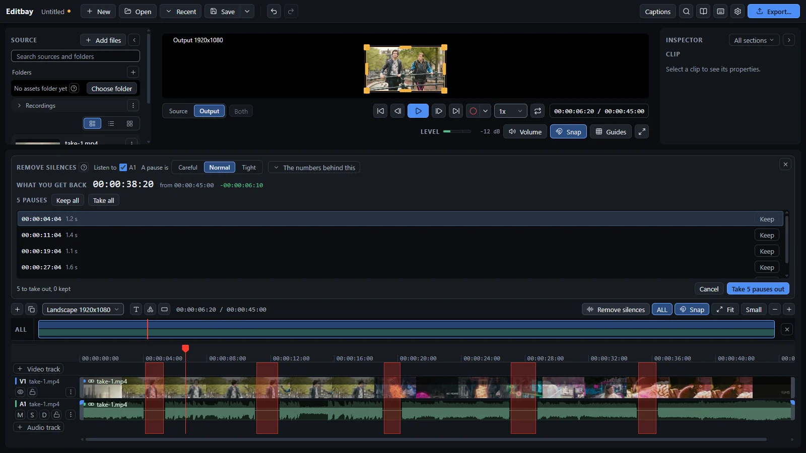
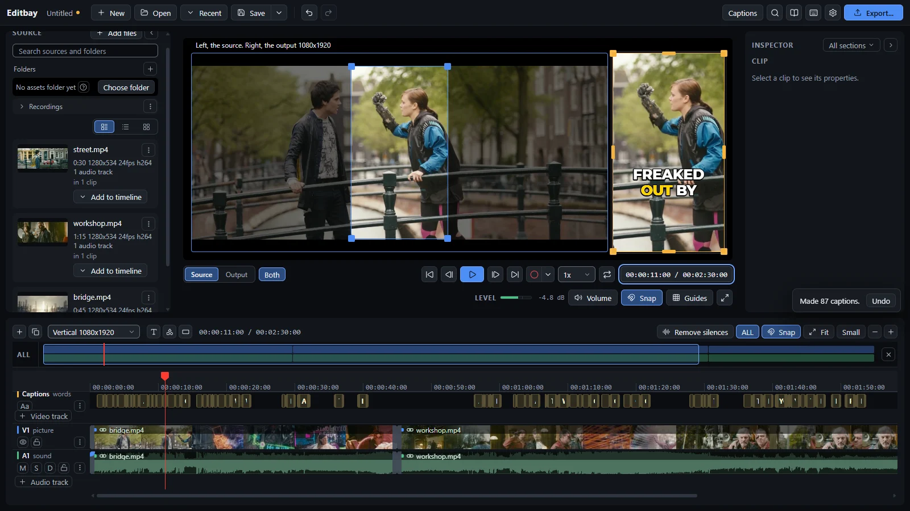
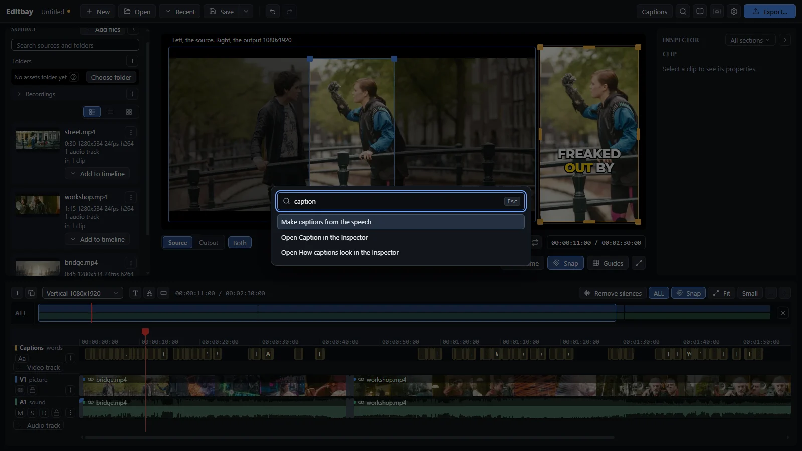

Cut talking-head videos and screen recordings fast. It finds the pauses, writes the captions and keeps your face in frame. No account, no subscription, no watermark.

Built for people who talk to a camera or record their screen, and want it cut today.

Finds every pause and shows the time you get back first.

Speech to text on your machine. No key, no upload, no bill.

Cut a short from a wide shot, and keep a face in frame.

Split, trim, ripple, layers and thirty transitions.

Clip volume, music ducked under the voice, noise clean up.

Every shortcut can be changed. Ctrl+K finds the rest.

Point it at a track. Keep or drop each pause one at a time, or take the lot. On anything with talking in it, that is most of the work done.
Switch a sequence to 1080x1920 and every crop is laid out again. Captions come from the speech, on your machine, styled and ready to burn in.


Windows may warn that the installer is unsigned. Click More info, then Run anyway.
Download Editbay